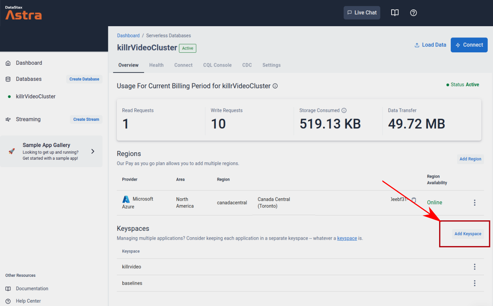
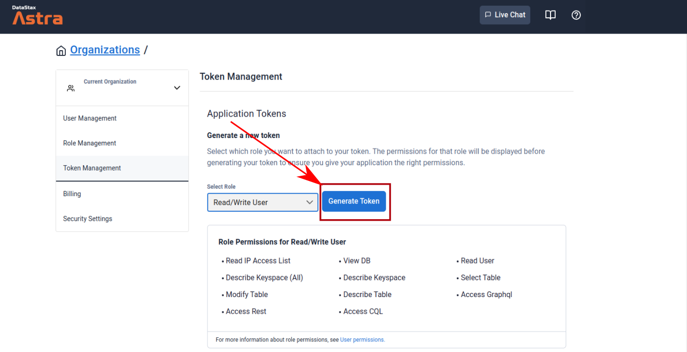

You need a target system to run your test against. If you already have one, you can skip this section. This tutorial assumes you are testing against a CQL based system. If you need to start something up, you have some options:
Run DSE in docker
You can start an instance of DSE with this one-liner:
docker run -e DS_LICENSE=accept --name my-dse -p 9042:9042 -d datastax/dse-server:6.8.17-ubi7
👉 If you want to see system-level metrics from your cluster, it is possible to get these as well as Apache Cassandra level metrics by using the DSE Metrics Collector (if using DSE), or by setting up a metrics feed to the Prometheus instance in your local docker stack. You can read the DSE Metrics Collector docs.
Run an Astra Cluster
You can choose to run a serverless cluster through DataStax AstraDB for functional testing. For tips on how to set-up an Astra DB instance, you can check out this [Astra Tutorial].
If you plan to follow along this tutorial using AstraDB, you will need to follow these steps:
-
Add a keyspace named 'baselines' to your Astra Database (this is because Astra does not support adding keyspaces through CQLSH), see the following for details:

-
In the connect menu of your Astra DB Instance, download your secure connect bundle and make note of its path.
-
In your organization settings, you need to generate a Read/Write token and make note of the Client ID and Client Secret. see below for details:

Configuring for AstraDB
The following config pattern is often helpful for configuring NB5 for Astra:
... driver=cqld4 scb=<secureconnectbundle> userfile=<userfile> passfile=<passfile> ...
This allows you to keep the credentials in files so that they aren't exposed on the console or in log files. It is also convenient to put these into a subdirectory together when you are testing multiple systems, for example:
... driver=cqld4 scb=creds1/scb-somename.zip userfile=creds1/userfile passfile=creds1/passfile ...
This makes it easy to manage credentials for multiple endpoints when all you have to do is reference a different directory.
👉 It might be helpful to refer back to this section later when you learn about activity parameters.
Run Apache Cassandra in Docker
https://hub.docker.com/_/cassandra